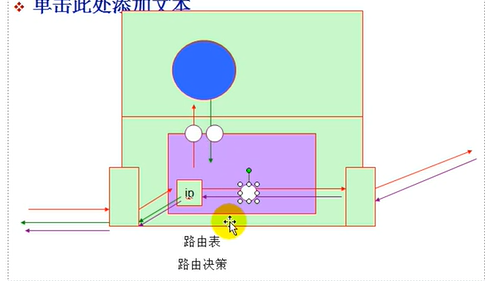
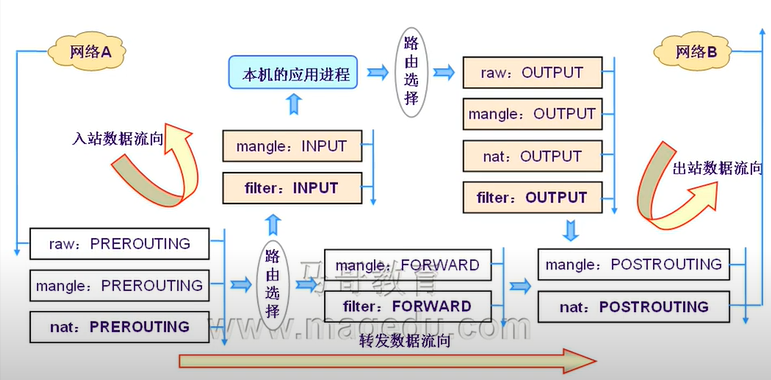

Airren Ren
Monday, January 1, 1
TCP 的有限状态机
CLOSED CLOSED
SYN_SENT LISTENING
SYN_RECEIVED
ESTABLISHED ESTABLISHED

netfilter: Frame
iptables: 数据报文过滤
防火墙： 硬件/软件
规则： 匹配标准和处理办法
默认规则：
关闭
匹配标准：
IP:源IP， 目标IP
TCP: SPORT, DPORT SYN=1,FIN=0,RST=0,ACK=0
UDP:SPORT, DPORT
ICMP: icmp-type
规则在内核空间
内核空间的TCPIP的协议栈上，开放给用户空间中的iptables API。
内核空间的工作框架：
用户空间的管理工具： system call
参考 openBSD
Linux 2.0：ipfw/firewall
Linux 2.2： ipchain/firewall Linux 2.4 ： iptables/netfilter
1：07
1/proc/sys/net/ipv4/ip_forward
路由决策发生在数据包到达网卡， 送到TCPIP协议栈上的那一刻。 然后先发生路由决策

netfilter 补充在tcp ip协议上的3个hook function。
多个规则，自上而下，逐个检查，
不做拒绝或者放行策略
4： 刚刚进入本机网卡，还没有到达路由表。（地址转换k’k）
5： 即将离开本机的时候，路由决策做出之后。
规则链
PREROUTING
INPUT
FORWARD
OUTPUT
POSTROUTING
filter：过滤 表
INPUT/ OUTPUT/ FORWARD
nat: 地址转换 表
PREROUTING/ POSTROUTING/OUTPUT
redirect : 本机重定向
mangle 修改报文首部 拆开修改，封装
PREROUTING
INPUT
FORWARD
OUTPUT
POSTROUTING
raw 原始格式
PREROUTING/OUTPUT

chain的优先次序
4表5链k
500条规则
自定义链只能被默认链调用才可以生效（return), 如果没有别任何一条队则匹配到应该有返回机制。
不能删除非空链。 用户可以删除自定义的空链，默认链不能被删除。
每一条规则都有两个内置的计数器，
一个用来记录被匹配到的报文个数
被匹配的报文大小之和。
匹配标准和处理动作
标准：
1iptables [-t TABLE] COMMAND CHAIN [num] 匹配标准 -j 处理办法
通用匹配
1-s, --src 源IP
2-d, --dst , 目标地址
3-p {tcp |udp | icmp}
4-i Interface, 指定数据报文流入接口 prerouting，input，forward
5-o interface， 指定数据报文流出的接口 output, postrouting, forward
6
7
8-j jump
9ACCEPT
10DROP
11REJECT
12
13连接状态
扩展匹配： 依赖扩展功能/user/lib/iptables
-
隐含扩展，不用特别指明由哪一个模块进行扩展，因为此时使用-p{tcp | udp |icmp}
-
显示扩展，必须指明由哪一个模块进行扩展， 使用-m完成此功能，
网络访问控制
DDOS
netfilter，
在用户层通过iptables 对netfilter进行控制管理。
Redirect 是针对本机的， 本机产生的数据包转到 localhost的某个端口， 适合用redirect，会比DNAT效率高一点，而外部地址只能用DNAT了。